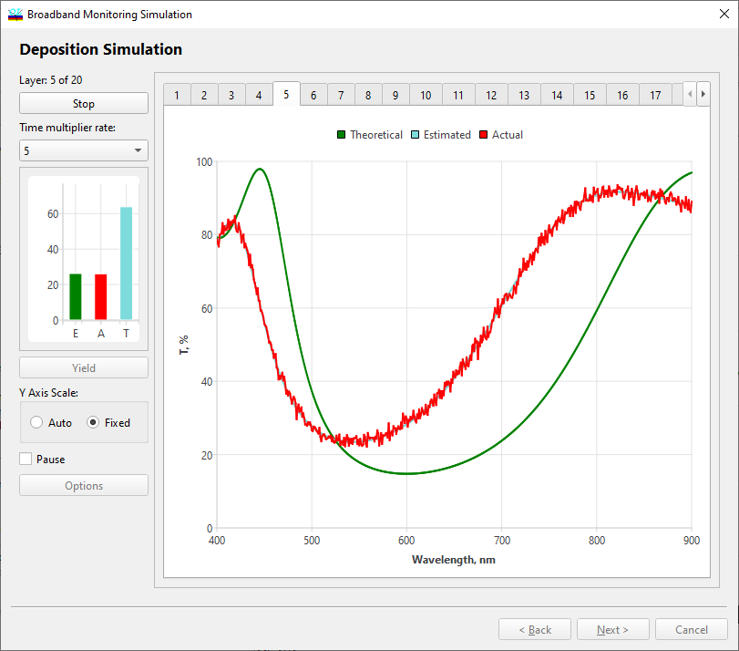

Broadband Monitoring Simulation - Simulation of Deposition
Broadband Monitoring Simulation - Simulation of Deposition
Navigation: OptiLayer Menu Commands > Analysis Menu > Broadband Monitoring Simulation >
Broadband Monitoring Simulation - Simulation of Deposition
` <broadmonsim_sigerrors.html>`__ ` <broadbandmonitoringsimulatio.html>`__ ` <broadmonsim_res.html>`__

At the fifth step of the dialog, press the Start button to run a computational manufacturing experiment. During computations, this button is designated as the Terminate button and allows for interrupting computations.
In the course of the computational manufacturing experiment, successive online measurement scans are analyzed by the incorporated control algorithm to determine termination times for layer depositions. The Broadband Monitoring Simulation option uses the same control algorithm for determining termination times as DLL OptiReOpt (see http://www.optilayer.com/products-and-services/optireopt). This algorithm is extremely efficient from a computational point of view and, due to this fact, works very quickly. Computations required for simulating deposition and monitoring processes are even faster. This allows us to use an internal time scale in which time runs much faster than in reality.
The running heading above the Start button indicates which layer is currently being deposited. Three bars below the Start button indicate the theoretical layer thickness (green bar), the growing thickness of the deposited layer (aqua bar), and the estimated thickness of the deposited layer (red bar). The estimated thickness value is used by the control algorithm to make a decision about terminating layer deposition.
The green spectral curve in the right part of the window represents the theoretical spectral transmittance/reflectance at the end of the current layer deposition. The yellow spectral curve shows the theoretical transmittance/reflectance when 80% of the current layer thickness is deposited, and the blue curve shows the theoretical transmittance/reflectance when 90% of the current layer thickness is deposited. The aqua spectral curve shows the transmittance/reflectance corresponding to the actual thickness of the current layer.
The Pause checkbox regulates whether there are time intervals between depositions of layers or not.
The Y Axis Scale radio button allows selecting the type of scaling for the preview screen.
See also: